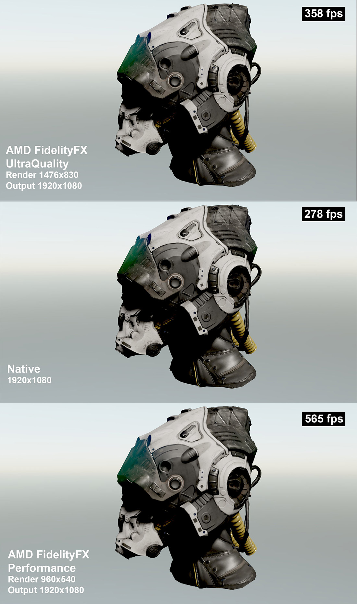

Fidelity Super Resolution
AMD FidelityFX Super Resolution (FSR) uses cutting-edge upscaling technologies to help boost your framerates in select titles1 and deliver high-quality, high-resolution gaming experiences, without having to upgrade to a new graphics card. More details here.
This effect allows scale low-resolution image to the final resolution image improving the performance of your render. FSR support 4 recommended configurations:
| FSR 1.0 quality mode | Description | Scale Factor | Input Resolution | Output Resolution |
|---|---|---|---|---|
| Ultra quality | Ultra quality mode produces an image with quality virtually indistinguishable from native rendering. It should be selected when the highest quality is desired. | 1.3x | 1477x831 1970x1108 2646x1108 2954x1662 |
1920x1080 2560x1440 3440x1440 3840x2160 |
| Quality | Quality mode produces a super resolution image with quality representative of native rendering, with a sizeable performance gain. | 1.5x | 1280x720 1706x960 2293x960 2560x1440 |
1920x1080 2560x1440 3440x1440 3840x2160 |
| Balanced | Balanced mode produces a super resolution image approximating native rendering quality, with a major performance gain compared to native. | 1.7x | 1129x635 1506x847 2024x847 2259x1270 |
1920x1080 2560x1440 3440x1440 3840x2160 |
| Performance | Performance mode visibly impacts image quality and should only be selected in situations where needing additional performance is critial. | 2.0x | 960x540 1280x720 1720x720 1920x1080 |
1920x1080 2560x1440 3440x1440 3840x2160 |
